Installing and using WSL, Docker Desktop, VSCode and Harbour Samples
 Author: Eric Lendvai
Author: Eric Lendvai
Table of Contents
- Introduction
- Prerequisite, Warnings and Recommendation
- Terminology, Acronyms and Abbreviations
- Installing WSL
- Installing Docker Desktop
- Setting up VSCode
- Running and Debugging Harbour Samples in Linux
- Running and Debugging Harbour Samples in Windows
- Direct use of WSL
- WSL Backup and Restore
- Docker Basics
- Conclusion
Introduction
As per https://learn.microsoft.com/en-us/windows/wsl/about
"The Windows Subsystem for Linux lets developers run a GNU/Linux
environment -- including most command-line tools, utilities, and
applications -- directly on Windows, unmodified, without the overhead of
a traditional virtual machine or dualboot setup."
This
article will assist you in setting up WSL version 2 on Windows 10 or
11, which is one of the best methods to use for the VSCode (Visual
Studio Code) "Dev Containers" extension.
All the Harbour samples available at https://github.com/EricLendvai/Harbour_Samples
can be developed and executed using the "Dev Containers" extension,
meaning develop/debug in Windows and compile/debug/run in Ubuntu.
The https://github.com/EricLendvai/Harbour_Samples/tree/main/ClientAPI
example actually relies running in Ubuntu, since adding support to curl
can easily be done and Linux, while a true nightmare in Windows.
We
will also cover how to setup VSCode on Windows (host side) to edit and
execute applications on an Ubuntu distro inside of WSL2.
Prerequisite, Warnings and Recommendation
Prerequisite:
- Windows 10 or above.
Warnings:
- The development described in this article is not meant for applications with GUI (Graphical User Interface), but for console and web apps. Hopefully at some point it could be used for developing FaaS (Function as a Service) solutions like: AWS Lambda, Azure Functions, and Google Cloud Functions. It seems that it would be possible to develop GUI apps if we were to use Hyper-V instead of WSL. This requires Windows Pro series.
- Linux, including Ubuntu is case sensitive. All commands and parameters must be entered with the expected casing.
- If you are using Acronis Backup, you must disable the Windows service "Acronis Cyber Protection Service". Set the service to start "Manual" and reboot. That Acronis Windows service will conflict with then VSCode Harbour Debugger by disabling the use of breakpoints.
- Docker Desktop is not free for companies with more than 250 employees or having more than $10 million annual revenue. Please check for current pricing requirements at https://www.docker.com/pricing/. The cost per month/user is quite low otherwise.
- Mac users could use Lima instead of Docker Desktop. See https://github.com/lima-vm/lima or example for using Lima.
- Docker Desktop will not run inside a VMware Workstation client. Install it on your host OS.
- In Docker containers, localhost refers to the container itself. Use host.docker.internal instead of localhost to access the local machine.
- Local folder (Windows folder) mounted inside Docker containers DO NOT SUPPORT FILE OR RECORD LOCKS. This means that using the Harbour USE command in shared mode will appear to work, but using the APPEND, RLOCK Harbour commands will fail, and most likely trigger an abnormal exit of your application. To work around this, either copy tables inside your Docker container (which is an instance of a running image), or only rely on accessing SQL servers.
Recommendation:
- Use the "xpo.local-history" VSCode extension. It will keep ongoing diffs of all the changes to source files, regardless if you are editing locally or in container mode. This can help you undo changes, without the need to constantly push to a repo.
Terminology, Acronyms and Abbreviations
| WSL | As per https://learn.microsoft.com/en-us/windows/wsl/about Windows Subsystem for Linux |
| Distribution | A
Linux distribution[a] (often abbreviated as distro) is an operating
system made from a software collection that includes the Linux kernel |
| Distro / Distros | Abbreviation for Linux Distribution |
| VSCode | Visual Studio Code https://en.wikipedia.org/wiki/Visual_Studio_Code https://code.visualstudio.com/ |
| LTS | Long Term Support https://en.wikipedia.org/wiki/Long-term_support |
Installing WSL
Our first step is to install WSL in Windows. Go to the "Programs and Features" item in "Control Panel".
Then select "Turn Windows features on or off".
Then select "Turn Windows features on or off".
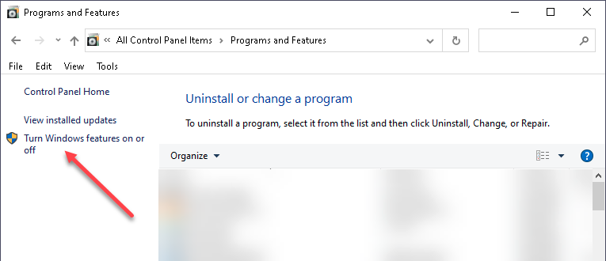
Then ensure "Windows Subsystem for Linux" and optionally "Windows PowerShell 2.0" are selected, then press OK.
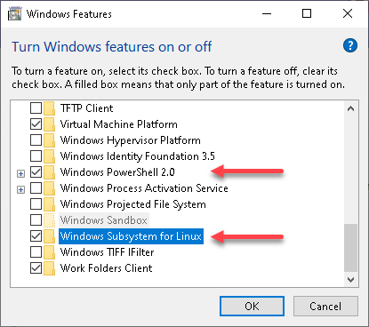
Once the install completed, reboot as requested.
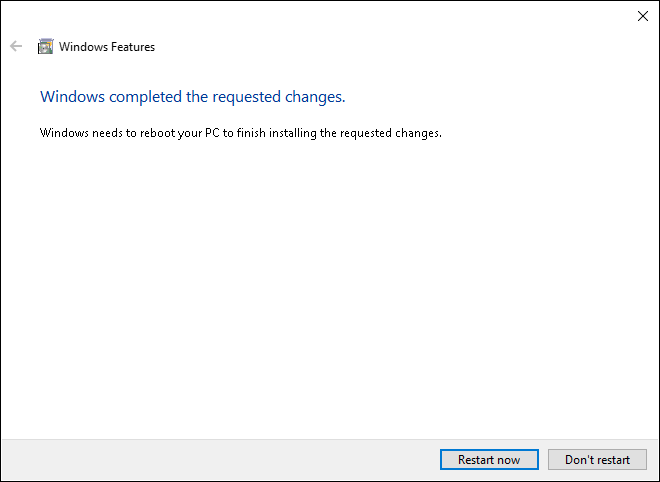
After installing WSL, we need to install at least one distro (a version of Linux).
I recommend using Ubuntu 20.04 or higher. More than one distro can be installed. Most will use around 1Gb of disk space.
Later on, when we create docker images, they can be running under one of those distros.
All configuration of distros are done using the "wsl" command.
Start Windows PowerShell or Command Prompt.
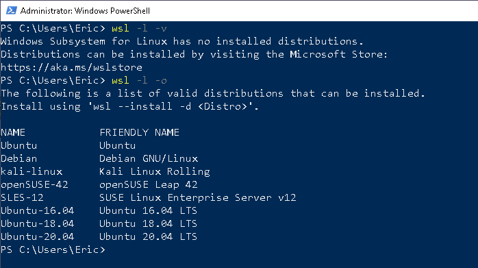
To be certain you will only configure distros in WSL2 mode execute the following:
wsl --set-default-version 2
The WSL system can have more than one distro installed.
Use the "wsl -l -v" command to list all installed distros.
There
are 2 methods for adding distros. Either by adding one from a short
list of online available ones or using the Microsoft Store (for free).
- Use the "wsl -l -o" command to list all distros that can be installed without using Microsoft Store, then use "wls -- install -d <DistroName>"
- Go to the Microsoft Store and search for Ubuntu for example.
Calling "wsl"
with no argument will start your default distro and place you inside a
bash (command) interface where you can use regular linux commands.
If you have more than one distro installed use the following command to change your default one:
wsl --set-default <Distribution Name>
If you want to install Ubuntu 22.04, you will need to get it from Microsoft Store (free).
The version numbers for Ubuntu are based on year and month. So 22.04 represents April 2022.
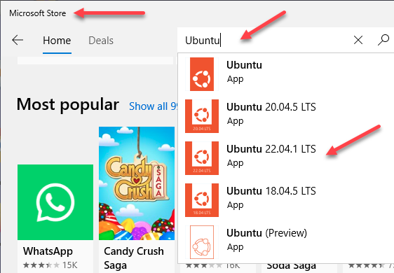
Select the Ubuntu version you wish to install.
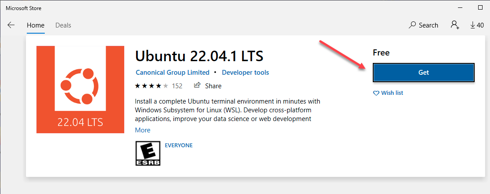
As you can see the downloads can be quite large.
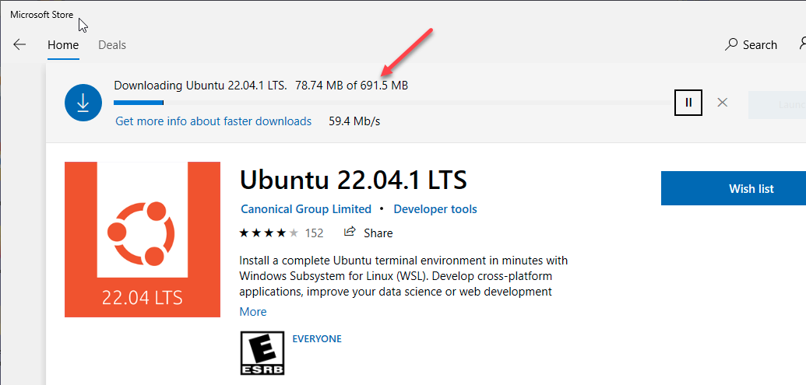
Once the download phase is done, it will unpack and install the distro.
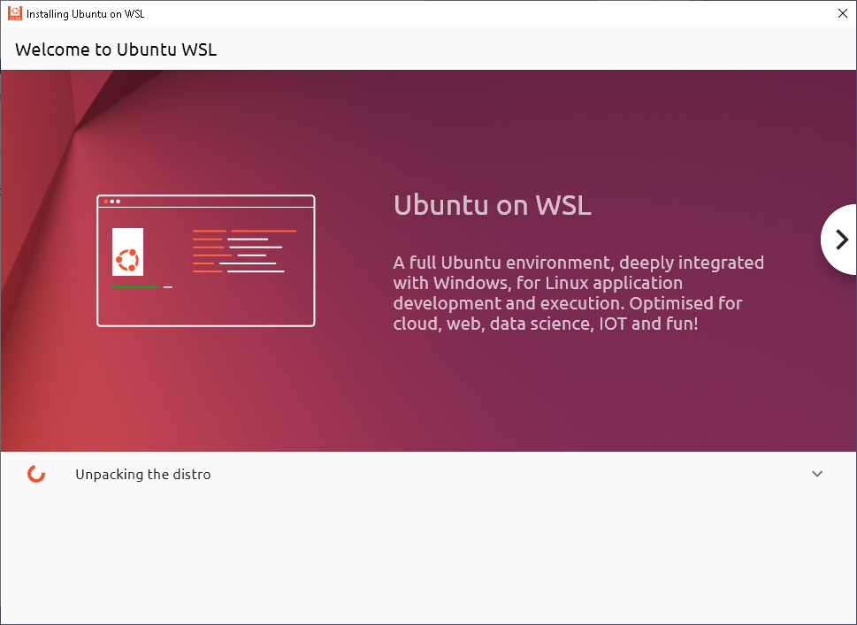
You will need to "Launch" it at least once, to register a Linux user.
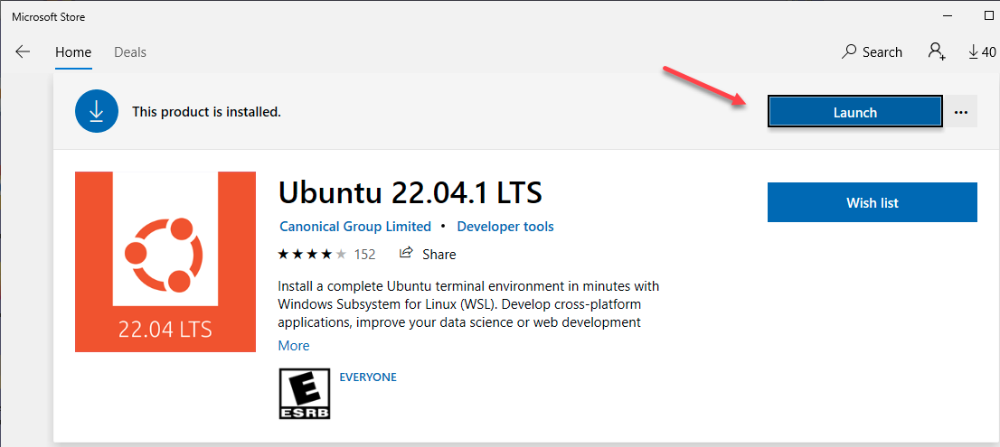
Enter a simple username and password. Since this is only used locally, security is not too much of a concern.
The wsl command will automatically use that account when accessing the distro in the future.
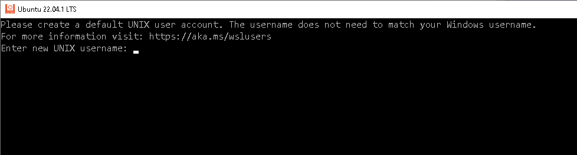
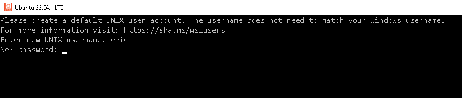
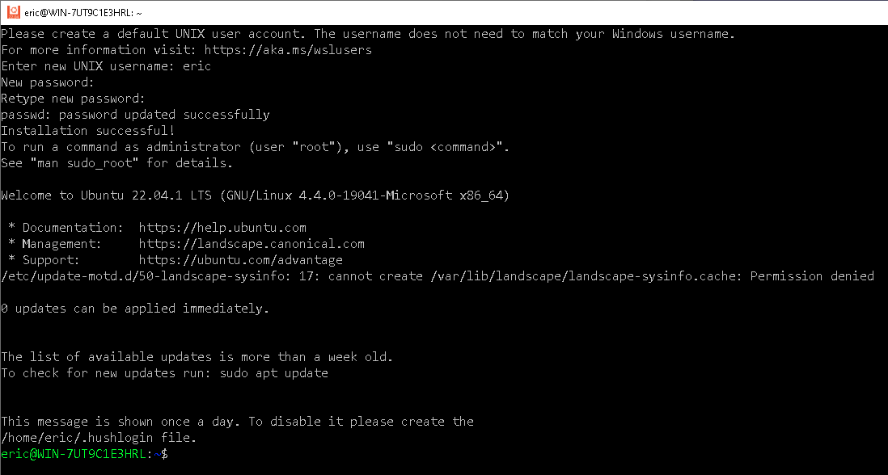
Afterwards simple enter "exit" to go back to your Windows Shell (PowerShell or Command Prompt)
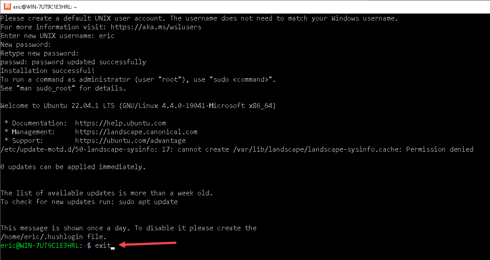
Using the "wsl -l -v" command you can verify the new distro is installed. You may need a reboot your machine to see the new distro.
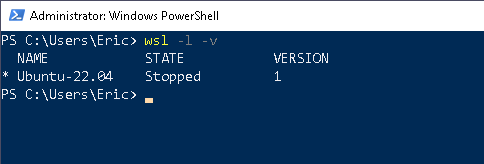
Installing Docker Desktop
Please check the Warnings about Docker Desktop License listed at the top of this article.
Download Docker Desktop first from https://www.docker.com/products/docker-desktop/
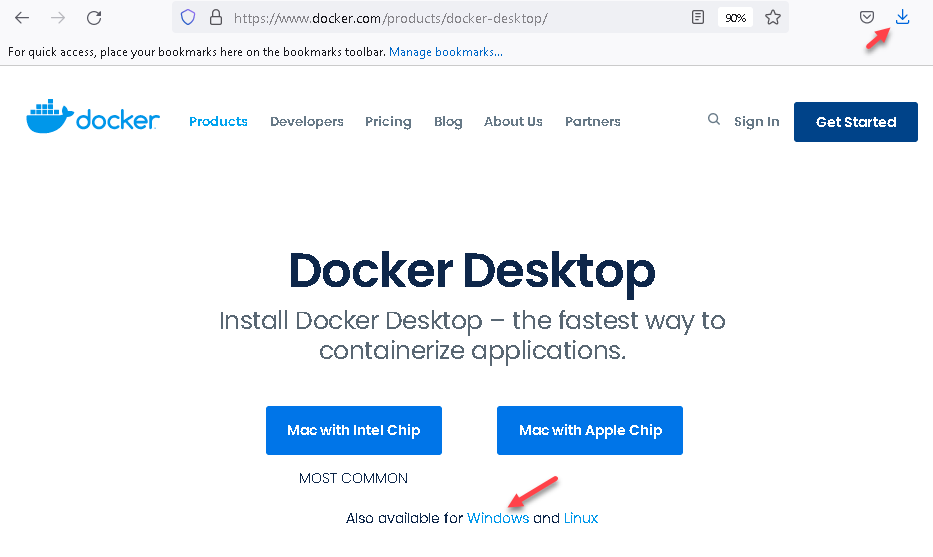
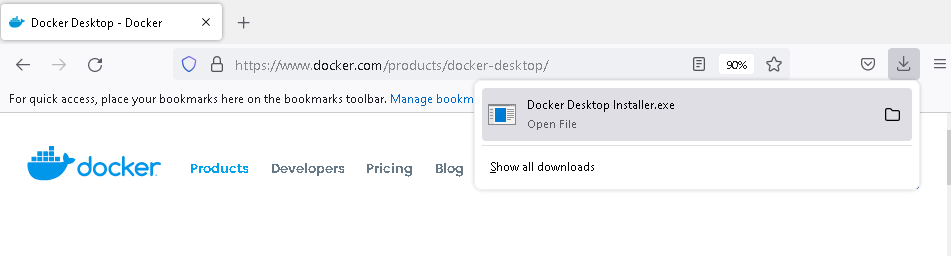
Ensure "Use WSL2 ..." is selected. Then press "Ok"
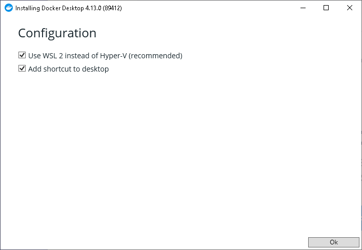
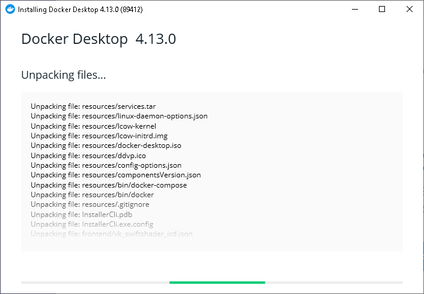
Installing Docker may also turn on some additional Windows Feature.
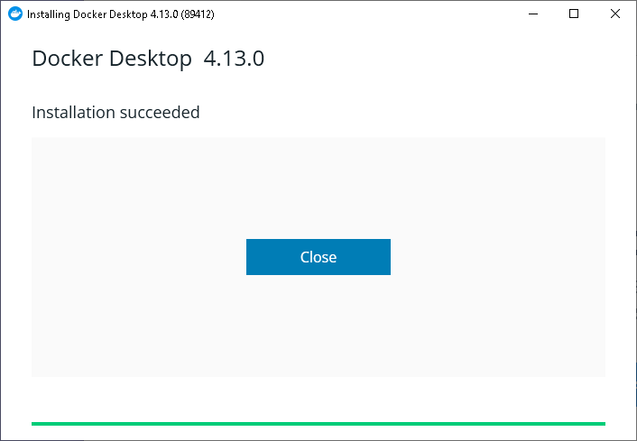
Either
use your Docker Desktop icon placed on your Desktop (if you had the
installer add it for you), or find it in your start menu.
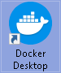
View the terms and Accept.
If you go back to a Windows shell and issue the "wsl -l -v" command you will also see two new distros. Those are only use by Docker Desktop itself.
Optionally issue "wsl --setdefault Ubuntu-22.04" command. This will be useful if you simple use the "wsl" command with not arguments.
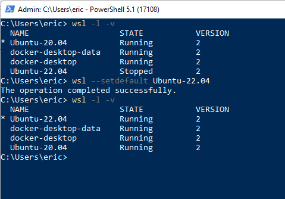
The following will show entering the Ubuntu bash and how to verify your version.
cat /etc/os-release and cat /proc/version
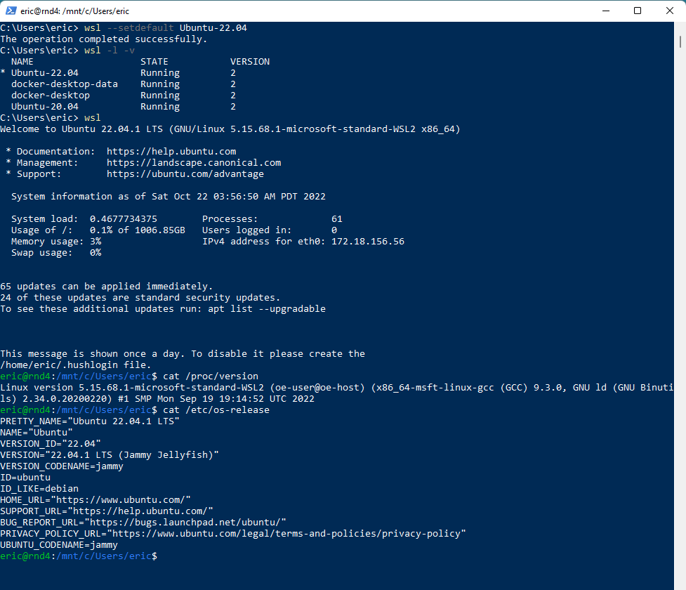
Setting up VSCode
If you don't already have VSCode installed, you can follow the instructions from here.
Please clone or download the following repo: https://github.com/EricLendvai/Harbour_Samples
Open the HelloHarbour_windows.code-workspace using VSCode. This is a standard VSCode workspace settings file.
If you don't intend to also run Harbour code from Windows itself, you could simple call "code ." from the HelloHarbour folder using a Command Prompt.
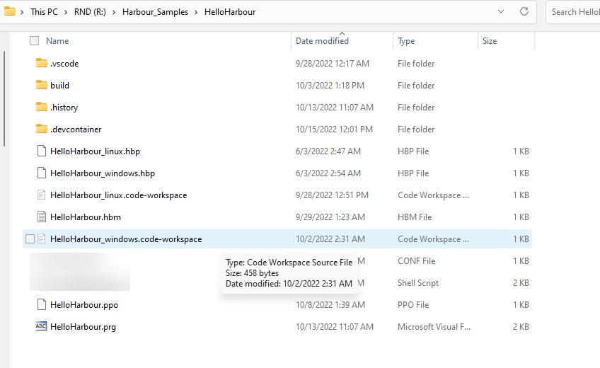
The following is a list of VSCode extensions you must or should install:
- Dev Containers from Microsoft. Required
- Docker from Microsoft. Optional/Recommended. Can assist in creating Dockerfile (configuration files for Docker images). For the intellisense / code coloring to work avoid Kai extension or other color theme extensions. Use the built in color themes.
- Harbour and xHarbour by Antonio Perricone. At the time of the writing of this article versions above 1.0.3 to 1.0.6 would fail in containers. But 1.0.7+ works again.
- Tasks by actboy168. Will create button to start VSCode tasks included in the Harbour_Samples.
- WSL by Microsoft. Optional. Lets you use VSCode in WSL just as you would from Windows. Like using "code ." in Linux bash (command prompt).
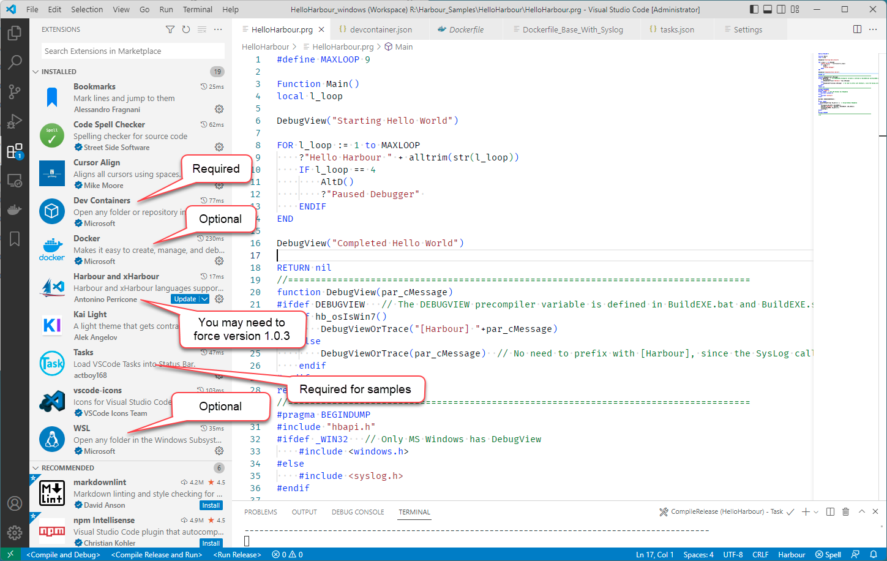
The
Tasks extension added "<buttons>" in the footer of VSCode and the
Dev Containers extension added the green >< pseudo button in the
left bottom corner.
There are multiple samples in the repo, feel free to explore them.
Running and Debugging Harbour Samples in Linux
Ensure you have Docker Desktop running first or at least before "Reopen in Container" !
Let's use the HelloHarbour sample application from the Harbour_Samples repo.
The
idea of developing in Windows while running/debugging in Linux can be
implemented by using VSCode from our host Windows and telling VSCode how
to create/use Docker Containers.
For
Microsoft Windows developers, if we want to also develop in Linux,
Ubuntu in this case, your choices was to install a Virtual Machine
application like VMware Workstation, Virtualbox (Oracle) or Microsoft
Hyper-V (Windows Pro), or to remote control inside another Linux machine
(VNC or other).
With the introduction by
Microsoft of WSL2, and the use of Docker via Docker Desktop, the
process can be completely transparent.
Additionally your
source code does not even have to be copied into the Docker container.
The folder from where you opened VSCode will be "mounted" inside the
running docker "container" as a folder /workspaces/<"name" property
inside devcontainer.json>/. So in the example below the
R:\Harbour_Samples\HelloHarbour Windows folder will appear as
/workspaces/HelloHarbour/
If you bash inside the Docker container created by the "Dev Containers"
VSCode extension, you will be running as "root", which is kind of the
Windows administrator account. No need to prefix Linux commands with
"sudo" (super user do).
Any folder or workspace
accessed via VSCode can have a ".vscode" folder where we usually see a
"launch.json" and "tasks.json" files. Those files are respectively use
to configure the debugger and create tasks that can be execute on
demand.
The "Dev Containers" extension needs a
".devcontainer" folder where you need a "devcontainer.json" file and at
least one Dockerfile.
The "devcontainer.json" will have a list
of settings letting the "Dev Containers" extension know how to create a
docker image and run it as a docker container.
Currently
only one of those settings can exists at one time. We can create
multiple Dockerfiles. But only one of those can be referred to/used by
when creating a docker image.
To see a complete list of attributes you can use in a devcontainer.json file go here. We will review the attributes used in our Harbour_Samples.
Line
6: The "dockerfile" attribute will specify the name of a Dockerfile to
use. In the samples all come with two Dockerfiles, one to build from
scratch, and another one to get a pre-built image available from
DockerHub.
Line 7: When Docker builds an image
if use a "Dockerfile" file, and a "context". The "context" is the
starting folder where COPY and ADD commands will use files from.
In Dev Containers, we actually don't need to COPY or ADD files, therefore the "context" (line 7 below) will be ignored
Line
11-17: The following are settings to be used while inside the
container. The Harbour extension install locally had its path local to
Windows, here we need to make them local ton inside the container.
Line
20: It is possible to mount additional local folder to appear as it
they are local to the container. In the Harbour_Samples, we placed all
the build and debug tools in a parallel folder named "BuildTools".
Additional parameters:
- "postStartCommand": In the HelloHarbour sample we wanted to use the Linux syslog as an equivalent to Microsoft Windows DebugView. To capture syslog messages and write them to a log file a service had to be started. "service rsyslog start". In Dev Containers there is no support for Dokerfile instructions CMD and ENTRYPOINT. But it is possible to execute one or many commands once the container is running, and before you can access it.
- "extensions": This is the list VSCode extensions that should be used while in container mode.
Use the pseudo button at the left bottom corner to go in Container mode.
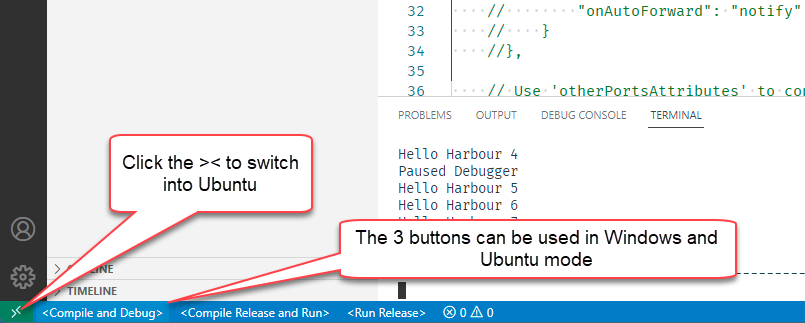
Select
"Reopen in Container". If you are already inside the container and you
edit the devcontainer.json or the related Dockerfile, you could also
select "Rebuild Container".
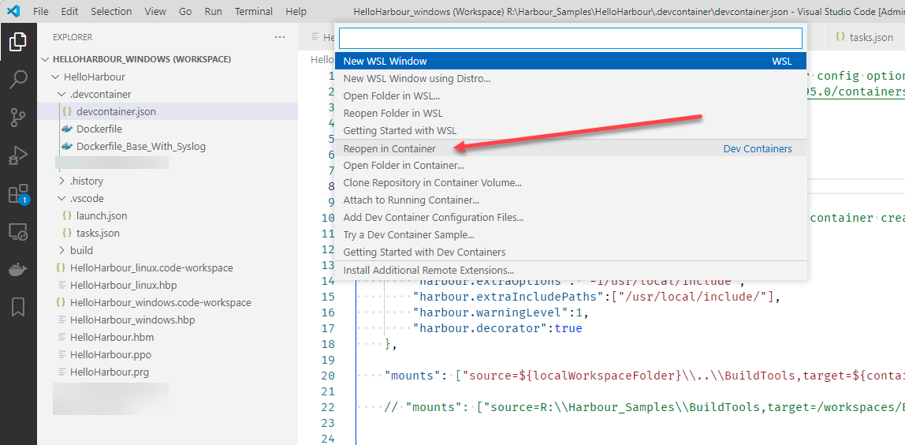
If you want to see the progress for building the docker image and starting the container, use the "(show log)" link.
Initial build, or rebuild after changes in configuration, can take many minutes.
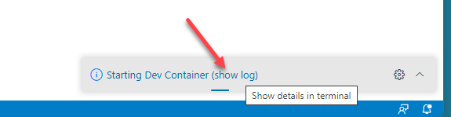
Example of a build log.
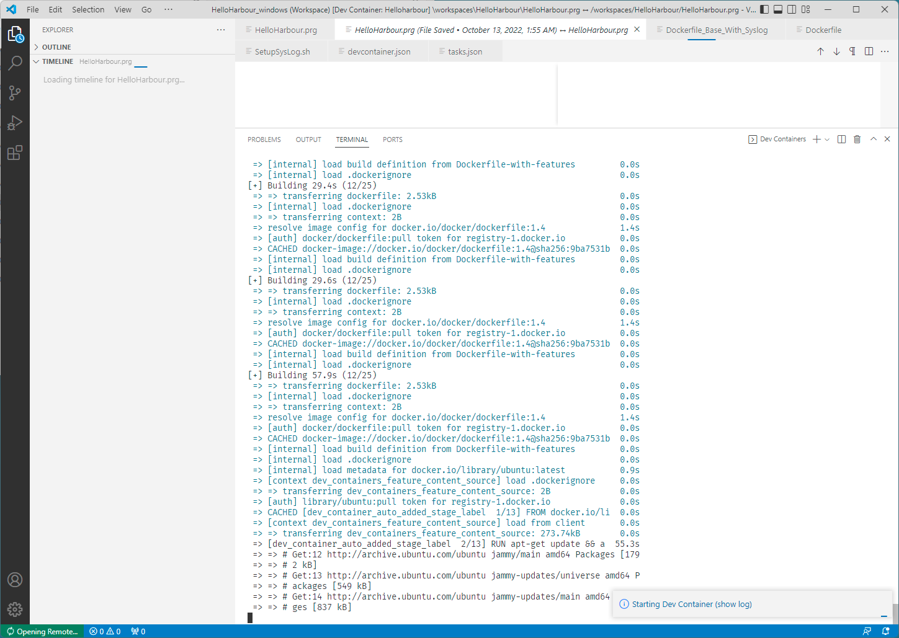
Also monitor the status in the running threads list (lower right area).
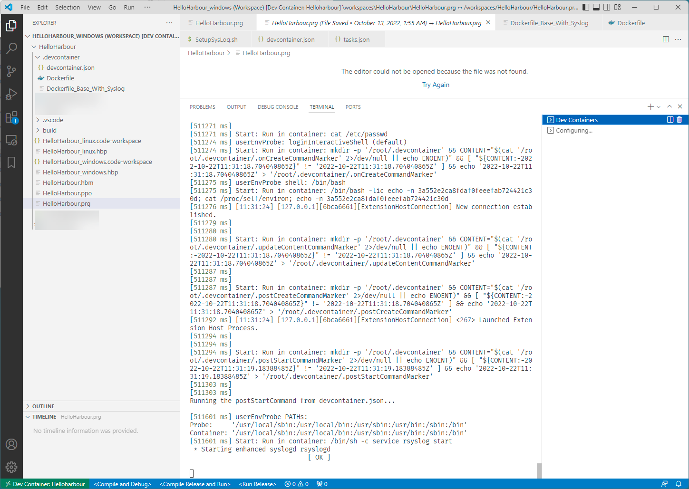
The "+" icon can also be used to open a bash terminal inside the container for example.
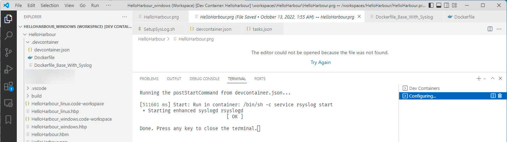
888
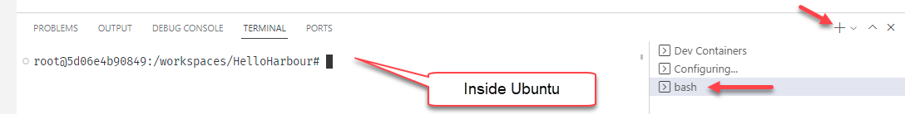
You
will be logged in as "root" sitting on the mount of your local
development folder. The path will be
/<workspaces/devcontainer.json.name>.
Remember, this folder only exists in the container, not the image.
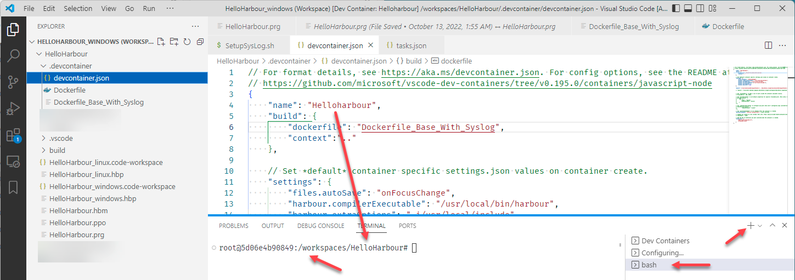
In
the HelloHarbour sample, you can also view a "DebugView" like log. Use
the "tail" linux command in a new bash terminal. The -n50 will specify
to see the last 50 log entries.
During your execution in debug mode (for now), you will be able to see tracing messages.
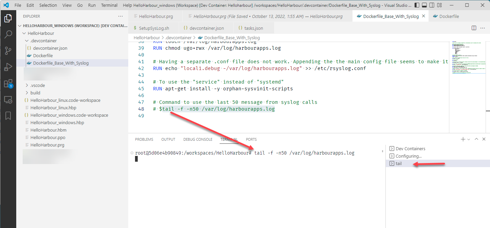
Use
the <Compile and Debug> button to start execution in debug mode.
If you are using a new version of the Harbour Debugger, also update
../BuildTools/vscode_debugger.prg from the Harbour VSCode extension.
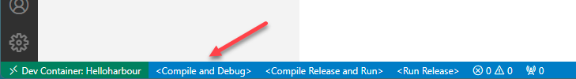
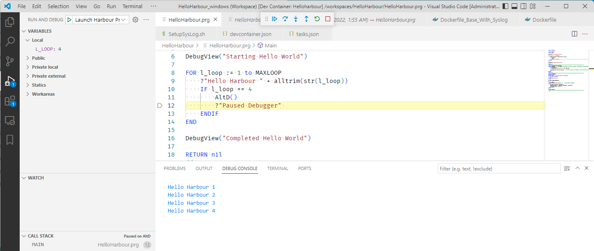
In
this example we can see we are paused right after the Altd() function
call, and see the line 6 message appear in the "tail" bash terminal.
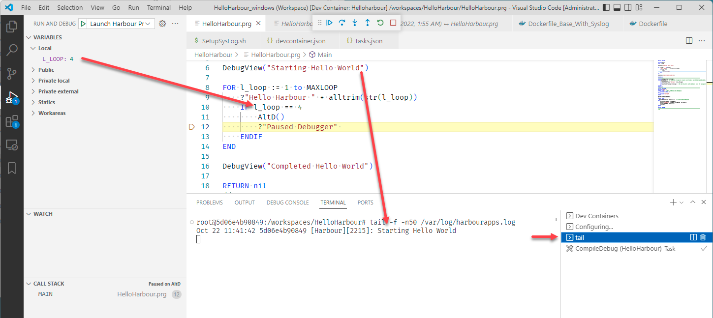
Review
the Dockerfile (in .devcontainer folder) and HelloHarbour.prg (bottom
area of file) to see what was needed for syslog to work.
Running and Debugging Harbour Samples in Windows
To switch back to Windows development mode, use the lower left button and select "Reopen Folder Locally".
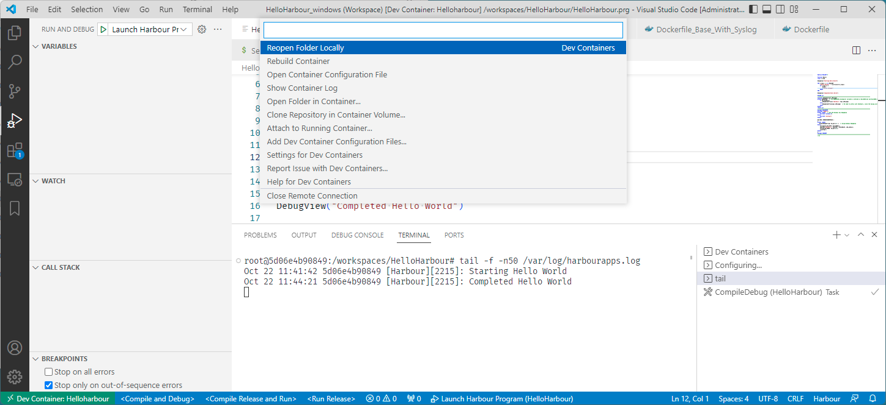
Before you use <Compile and Debug> again, you may want to start the DebugView application.
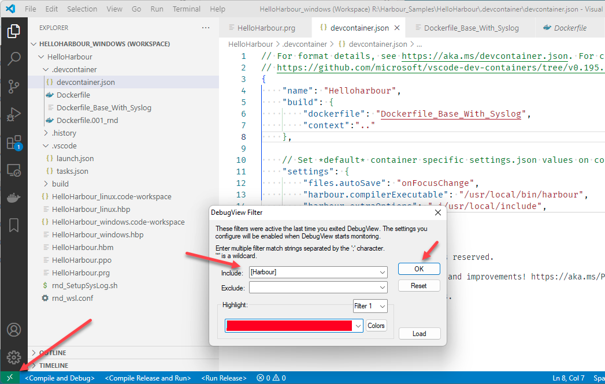
Instead of relying on a "tail" bash terminal, in native Windows the messages will appear in the DebugView app.
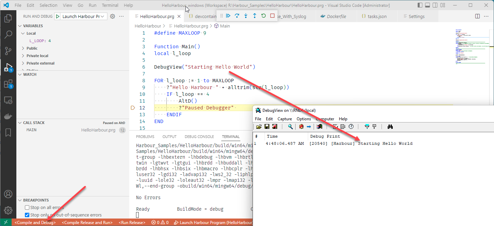
If
you want DebugView/Tracelog messages to also appear in "release"
compiles, update the BuildEXE.bat and BuildEXE.sh to add the
"-dDEBUGVIEW" flag on the hbmk2 line.
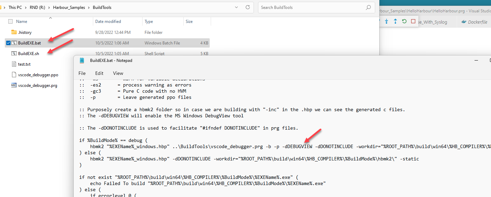
All executable files are build and placed under the build folder, win64 and lin64 / debug / release.
In
debug mode the executable files (also named that way in Linux, even
though the .exe extension is not needed) are build shared mode, meaning
they will use the Harbour runtime library.
In release mode we use "-static" to encapsulate everything inside the EXE.
Direct use of WSL
It also possible to access a WSL distro directly, meaning not as a docker container.
Adding files and folders to the distro does not affect the docker containers.
You can start a bash instance of the default distro by calling the "wsl" command.
You will not be using the "root" account, but the account created when you installed the distro.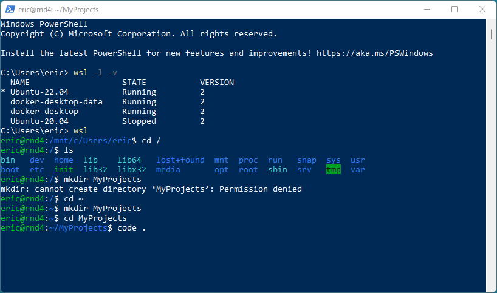
The VSCode WSL extension, added support to start VSCode from within the bash instance. But after executing "code ." command a Windows instance of VSCode will appear.
In reality VSCode split itself, and is running a server instance in Linux and the GUI of VSCode in Windows.
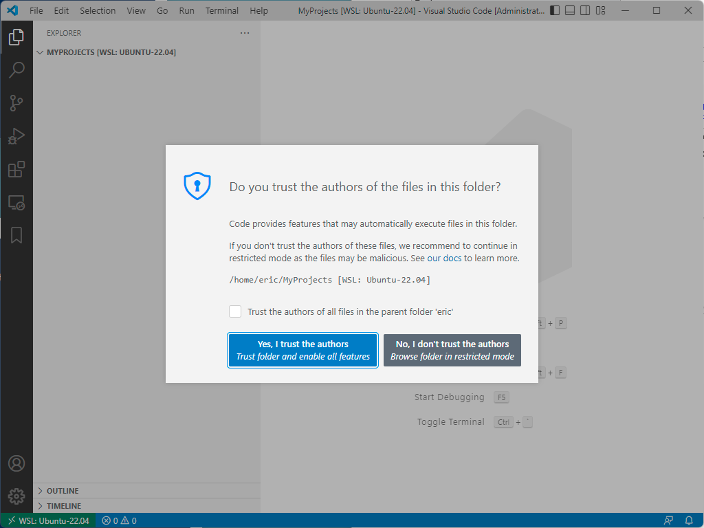
Creating files in VSCode, will actually add them inside the Ubuntu install, not the Windows file system or a Docker container.
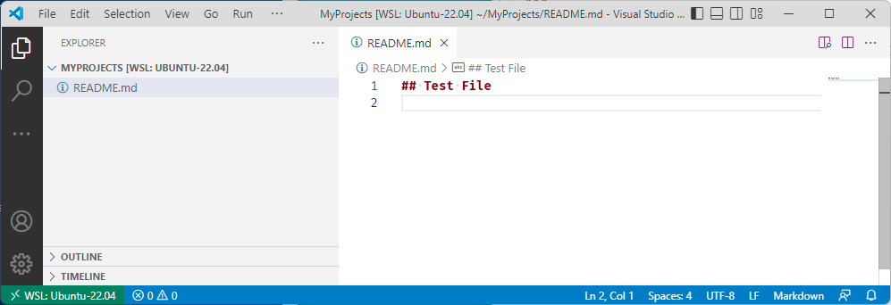
Using the Linux "ls -ll" command will prove the existence and properties of the new file.
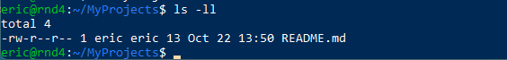
On
the other way, you were in a bash terminal inside of Dev Container
docker instance, we would be logged in as "root". But changes will not
persist when the container is rebuild or deleted.
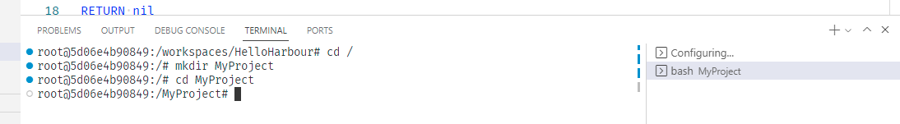
WSL Backup and Restore
If you decide to use and alter a WSL distro, you may want to back it up once a while.
Create a local Windows Folder and run an export (after it is shutdown):
md C:\WSLBackup
cd C:\WSLBackup
wsl -t <DistroName>
C:\WSLBackups> wsl --export <DistroName> <filename.tar>
For example: wsl --export Ubuntu-22.04 Ubuntu-22-04-001.tar
To recreate a distro using the previous backup use for example the following commands:
C:\WSLBackups>md C:\Users\eric\AppData\Local\Packages\Ubuntu-22.04-001
C:\WSLBackups>wsl --import Ubuntu-22.04 C:\Users\eric\AppData\Local\Packages\Ubuntu-22.04-001 Ubuntu-22-04-001.tar
C:\WSLBackups>Ubuntu-22.04 config --default-user eric
C:\WSLBackups>wsl --import Ubuntu-22.04 C:\Users\eric\AppData\Local\Packages\Ubuntu-22.04-001 Ubuntu-22-04-001.tar
C:\WSLBackups>Ubuntu-22.04 config --default-user eric
Visit the following link Basic commands for WSL to view a list of most used wsl command options.
Docker Basics
The easiest method to learn more about docker is to visit the official documentation page https://docs.docker.com/
Conclusion
I hope this article is going to help you build Harbour console and web apps, from Microsoft Windows, using Ubuntu.
This should also help you get used to using Docker and Linux commands.
For Mac users, skip the WSL sections, and you should also be able to learn development techniques.
The browser did not close this tab. It may have been opened directly instead of from the Articles list. Use Back to Articles.